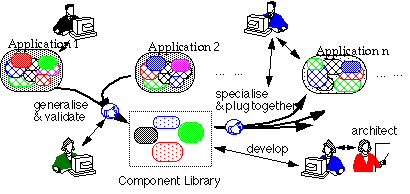
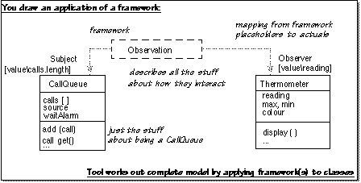

Component Based Development
This is the introductory paper to a working group at OT97.
If you're interested in taking part, click here.
Re-use is the lead reason for taking up OT, surveys show. But OT by itself
is just an enabler.
OT and re-use will reduce costs if well applied. If badly done, it increases
costs.
Costs always increase in the short term: much capital investment is required
to move to a re-use culture.
What is re-use?
Building and maintaining a library of generic
components.

Unfortunately, requires:
- Investment (i.e. initial expenditure)
- Specialised architectural skills
- Restructuring of project finance and workforce
- Component-building is about plugging things together --- well-defined
interfaces required
- More restricted or no informal communication between suppliers and users
- Components need tools need precise semantics

- Describe how each message affects state of object (and outputs)
interface Financial_Instrument
{ Money balance (); // read-only
Money maxPayOut (); // read-only
Money balanceMinLimit (); // read-only
void payIn (Money amount)
pre
post // increases the balance by the amount paid in
balance == old.balance + amount ;
void payOut (Money amount)
pre // this spec applies if payout is allowed
// and this amount is available in account
maxPayOut > amount
&& balance - amount > balanceMinLimit
post // decreases the balance by the amount paid out
balance == old.balance - amount ;
}
- The state-changing operations are specified in terms of the read-only
"attributes"
- Postcondition relates states before and after - note use of "old"
version of "self"
- Pre & postconditions stripped before presenting to compiler!
Consequences
- More investment in documentation
- more reliable re-use
Many components are not single objects or classes
If 'component' means a coherent piece of design effort, then what do we
expect to see in a component?
Objects, clusters of classes, updates to classes, models, designs, plans,
architectures, patterns, ....
Pure server objects can be described in isolation: stacks, widgets, databases
all accept requests from any kind of client, return the results, and expect
nothing inparticular of their clients.
But a very great deal of significant work is about relationships and collaborations
between objects. As evidence, see any book on patterns. To encapsulate these
pieces of design effort in a component, you have to say something about
each of the participating objects and the roles they play.
Frameworks
Frameworks are a convenient notational device which allows us to express
the combination required when several roles are imposed on one object. They
are used to describe collaborations and other packages of design.
Frameworks formalise the collaborations and other relationships at the core
of patterns. A pattern describes how to use a framework.

Click
here to see and add followup comments.